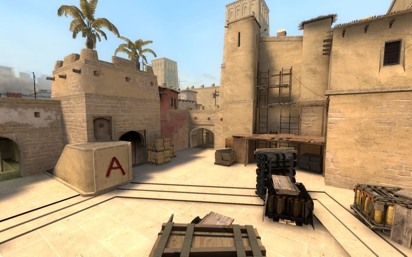
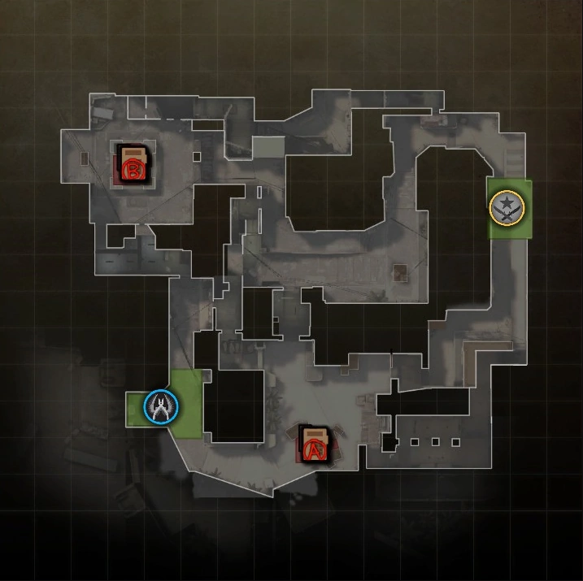
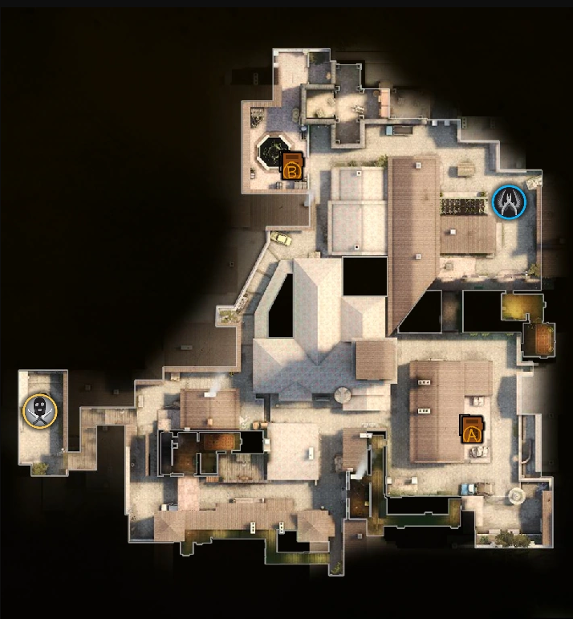
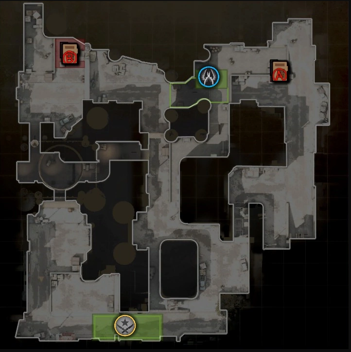
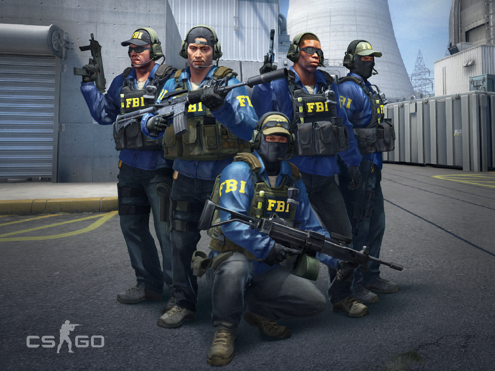

Counter-Strike: Global Offensive (CS:GO) expands upon the team-based first person
shooter gameplay the original Counter-Strike pioneered when it launched in 1999.
Two teams compete in multiple rounds of objective-based game modes with the goal of winning enough
rounds to win the match.
CS:GO features new maps, characters, and weapons and delivers updated versions of the classic
Counter-Strike maps like Dust, Inferno, Nuke, Train, and more.
In addition, CS:GO introduces new game modes like Arms Race, Flying Scoutsman and Wingman, and features
online matchmaking and Competitive Skill Groups.
Maps:
The game has a lot of different maps that the player can choose from, most popular maps are:
1. Mirage
Mirage (de_mirage), formerly known as Strike, is a Bomb Defusal map for Counter-Strike: Global Offensive. The map was added to the game on June 6, 2013.
Mirage is perhaps the most iconic bomb defusal map in CS:GO. It is set in a middle-eastern town, which is thought to be Morroco, and is one of the most commonly played maps by CS:GO players. It is generally agreed by the community that Mirage lends its favor as being a CT-sided map, and is a map that has been present for a long time in the Counter-Strike series, despite being added to CS:GO shortly after the game's release.
(Bomb Site A)
(Site Plan)
2. Inferno
Inferno (de_inferno), is a bomb defusal map featured in the Counter-Strike series.
The map is set in a small town with European architecture. In the Global Offensive version, the presence of the Separatist faction suggests that the map is definitely set in Italy, as evidenced by the signs written in Italian seen around the map. However, the separatist faction is also present in the Basque country of Spain and France, so it's plausible it could be there, too.

(Inferno Map)
The map is loosely rectangular, with the Counter-Terrorists spawning on one corner of the map and the Terrorists on the diagonally opposite corner, and the two bombsites sitting at the other two corners.
(Site Plan)
3. Dust 2
Dust II (de_dust2), also known as Dust2 is a Bomb Defusal map featured in the Counter-Strike series. It is the successor to Dust.
One of the most popular maps in the Counter-Strike series due to its strong balance, Dust II is an iconic map for the Counter-Strike franchise. It is widely played on many servers and is a popular choice for Counter-Strike tournaments as well.

(Dust 2 Map)
The map can be loosely divided into three interconnected lanes: Tunnels connecting T Spawn to bombsite B, mid connecting T Spawn to CT Spawn and catwalk, and Long connecting T Spawn to bombsite A. Pathways branch out from these lanes and form an interconnected map allowing for tactical player movements.
(Site Plan)
Game Modes:
Competitive
This is the classic game mode that put Counter-Strike on the map. Two
teams of five compete in a best-of-30 match using standard competitive Counter-Strike rules.
Players must purchase armor, weapons, defuse or rescue kits, and manage their in-game economy to
maximize their chance of success. The first team to win 16 rounds in either Bomb Defusal or Hostage
Rescue game modes wins the match.
Competitive offers unique Skill Groups players can earn and display, beginning with Silver 1 and
progressing up to The Global Elite. Join a match on your own or form a team and queue for a match
together!
Wingman
Queue by yourself or grab a friend in this 2v2 best-of-16 game mode on single bomb site maps. Players earn a Skill Group exclusive to Wingman and play using the Competitive Bomb Defusal ruleset. Buy weapons, armor, and defuse kits in an effort to plant the bomb or defend the bomb site!
Casual
Ready to play some Counter-Strike but don’t want to commit to a full
30 round match? Find a Casual match and play at your own pace in this drop-in, drop-out game
mode.
In Casual mode players automatically receive armor and defusal kits, play with a simplified economy,
and team damage has been turned off. Join a game and begin mastering CS:GO’s fundamentals!
Deathmatch
This fast-paced Casual game mode allows instant respawns and
encourages rapid engagements. After spawning, players have a limited amount of time to buy weapons
of their choice and engage the enemy.
Kills with different weapons are worth different point amounts, and throughout the match players
will be given bonus points for achieving kills with selected weapons. Respawn immediately and get
back to the fight!
Arms Race
Arms race is a gun-progression mode featuring instant respawning
designed for rapid close quarters combat.
Players gain new weapons immediately after registering a kill as they work their way through each
weapon in the game. Get a kill with the final weapon, the golden knife, and win the match!
Demolition
In Demolition players take turns attacking and defending a single
bombsite in a series of maps designed for fast-paced gameplay.
Players are automatically granted a starting weapon and advance through a sequence of firearms when
they register a kill. The more kills you earn the further you’ll advance towards stronger weapons
which give your team an advantage, like powerful sniper rifles!
Flying Scoutsman
This Casual 8v8 game mode features reduced gravity, does not penalize players for shooting while moving, and only allows two weapons – SSG 08 sniper rifles and knives. Take to the skies and eliminate your enemies; the first team to 9 rounds wins!
Teams:
Counter-Terrorists
Counter-Terrorists, commonly abbreviated as CTs, are one of the two forces featured in the Counter-Strike series, opposing the Terrorists.
(CT Team)
Their traits include having a wider arsenal of weapons as well as
having a slight tactical advantage on many maps. However, many of their weapons are much more
expensive and inflict less damage.
In all Counter-Strike games, the Counter-Terrorists' team color is blue.
(CT Logo)
Terrorists
Terrorists, commonly abbreviated as Ts, are one of the two forces featured in all of the Counter-Strike games, opposing the Counter-Terrorists.

(Terrorists Team)
Their traits include much more powerful weapons, as well as their
smaller, but cheaper armament.
Prior to Global Offensive, the team color for the Terrorists was red. In Global Offensive, it was
changed to yellow.
(Terrorists Logo)